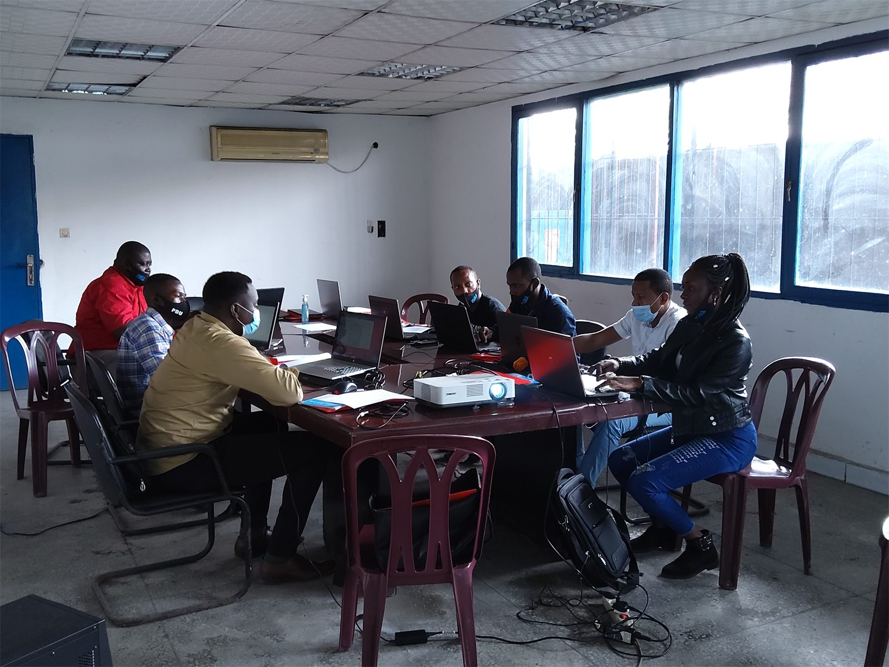
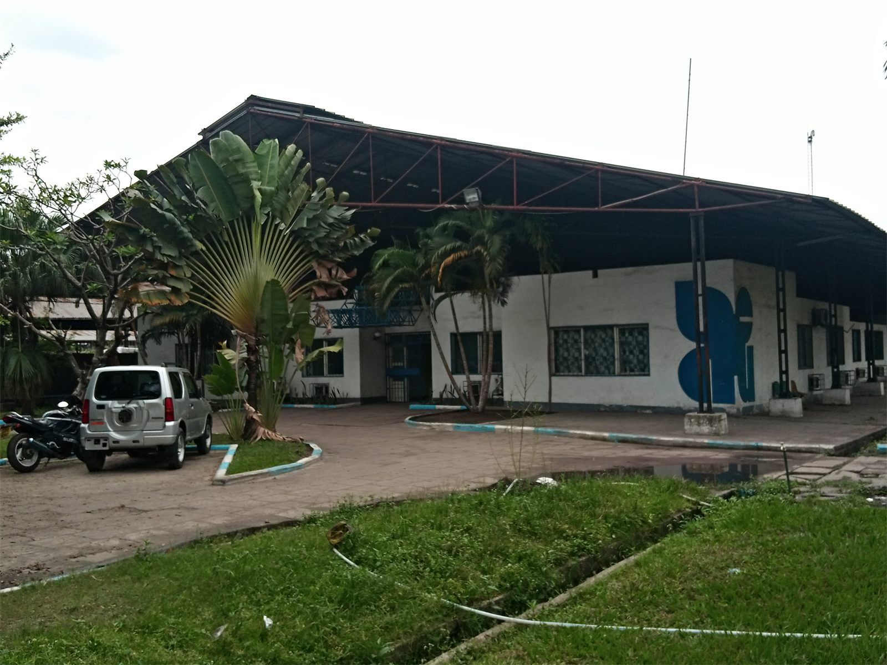
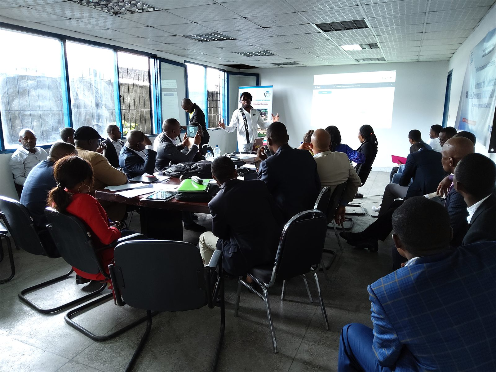
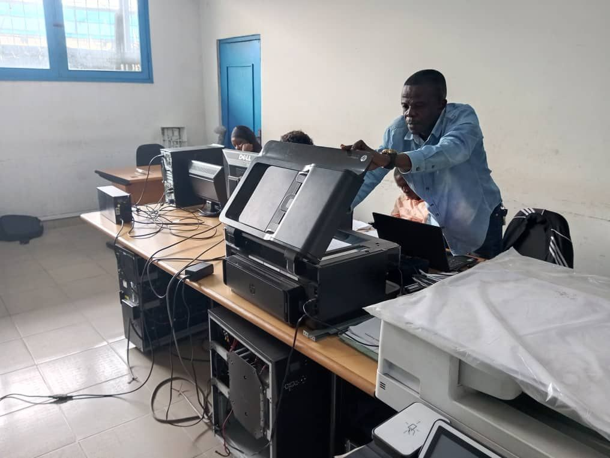
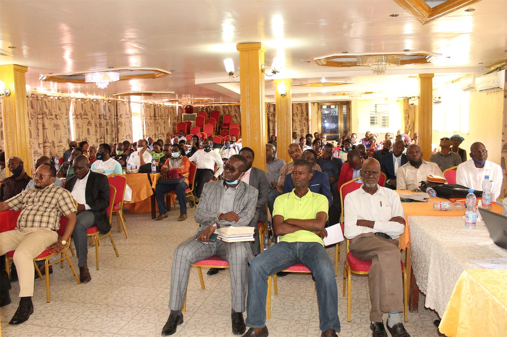
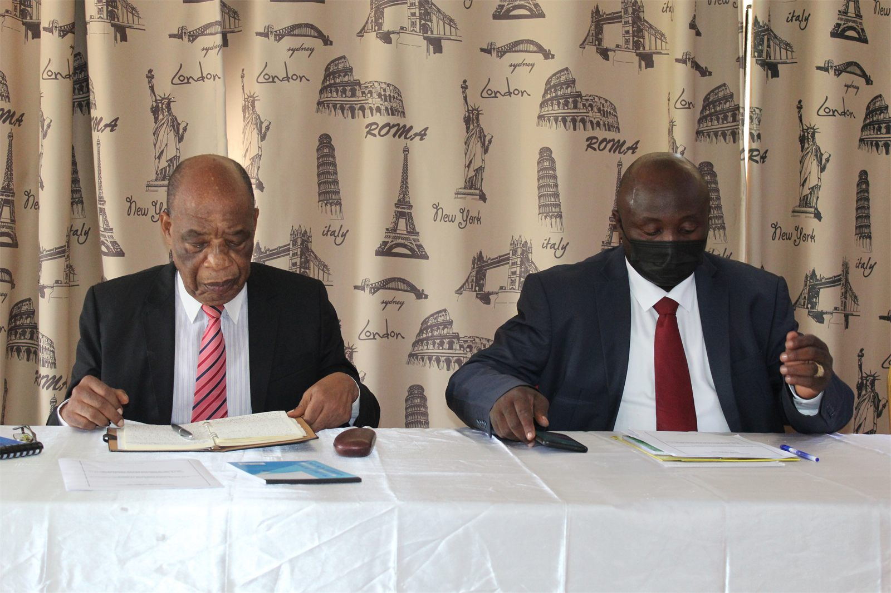
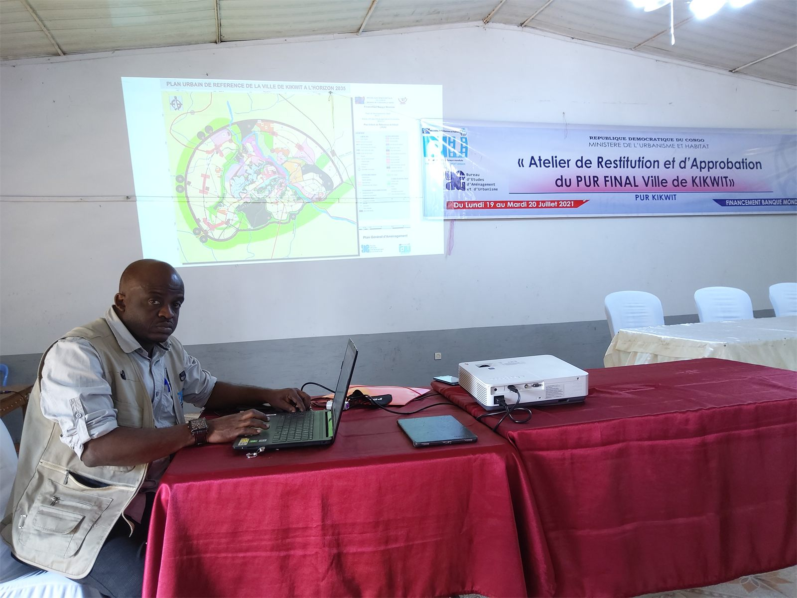
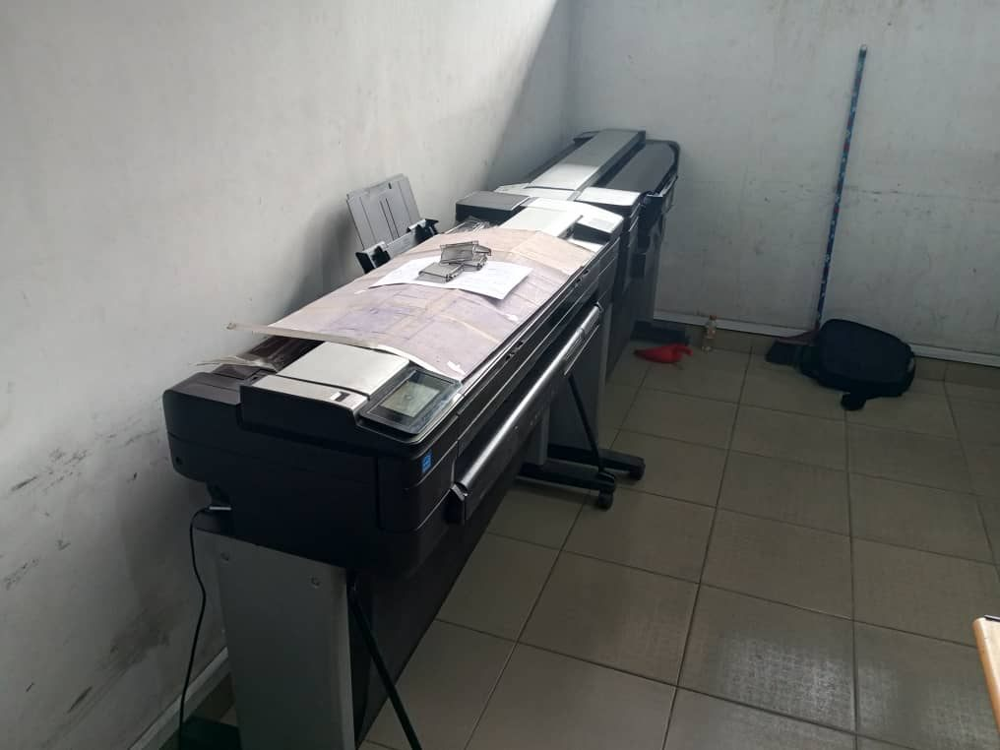

Centre de documentation et d'archivage
Visité quotidiennement par un grand nombre d'étudiants et de chercheurs.
Le trait d'union entre la vision territoriale et la réalisation des infrastructures en République Démocratique du Congo.
Le Ministère des Infrastructures et Travaux Publics dispose d'une structure technique d'études pérenne, ayant compétence en matière d'aménagement et de mise en place des infrastructures : le Bureau d'Études d'Aménagement et d'Urbanisme, BEAU en sigle.
Le BEAU développe, pour le compte du Ministre des Infrastructures et Travaux Publics, dans un programme pluriannuel, une importante activité d'études de préinvestissement, de cadrage général, de conseil et de conduite d'opérations d'aménagement des infrastructures, en priorisant les chefs-lieux de provinces.
Il intervient à tous les stades d'un projet : identification, faisabilité technique et financière, avant-projet, avant-projet détaillé, préparation des conventions, des cahiers des charges et des documents d'appel d'offres. Suivant le cas, il joue le rôle soit de concepteur, soit de conducteur d'opérations, soit de maître d'œuvre, voire de maître d'ouvrage délégué.

Outil indispensable et service spécialisé de référence, le BEAU a été créé pour accompagner le Ministère dans ses interventions sous forme de régie, en élaborant les études qui garantissent l'optimisation des choix d'investissement dans le secteur des infrastructures.
Être le trait d'union entre la vision territoriale et la réalisation des infrastructures, garantissant cohérence, durabilité et impact socio-économique, et se positionner comme un partenaire de référence pour l'État et les bailleurs.
Études de cadrage général et particulier, études de faisabilité technique et financière, études d'impact social et environnemental, études techniques d'exécution.
Assurer la maîtrise d'ouvrage déléguée et la conduite d'opérations.
Assurer le suivi et l'évaluation des programmes d'aménagement et de développement urbain.
Mettre en place un SIG pour une gestion technique efficiente des infrastructures et équipements sur toute l'étendue du territoire national.
Une démarche obligatoire qui met à contribution les autorités et les forces vives locales dans le choix des priorités.
Des compétences au service d'une stratégie globale d'amélioration des performances du secteur des infrastructures.
Le conseiller privilégié des structures chargées de la mise en œuvre des projets d'infrastructures en RDC.
Des solutions d'urbanisme résilient face aux défis climatiques et environnementaux.
Une concertation qui évite la fragmentation et renforce l'impact territorial, notamment dans les zones transfrontalières.
Des outils rigoureux qui garantissent la transparence, la performance et la cohérence des projets, du bureau au terrain.

Le BEAU compte 70 experts nationaux, répartis entre le siège à Kinshasa-Limete et les antennes provinciales :

Visité quotidiennement par un grand nombre d'étudiants et de chercheurs.

SIG et matériels performants : collecte et traitement des données, cartographie thématique de l'état des voiries et réseaux divers (VRD).

Sensibiliser et vulgariser les outils disponibles de gestion des infrastructures et les perspectives d'avenir.
Les interventions du BEAU se font en qualité de prestataire de services pour le compte de tiers : Gouvernement, entités territoriales décentralisées, bailleurs de fonds bi et multilatéraux, investisseurs privés.
Pour la réalisation d'aménagements d'infrastructures et d'équipements, le BEAU intervient sur la base des conventions de collaboration passées avec les agences d'exécution du Ministère, qui sont maîtres d'ouvrage délégués et dans lesquelles sont prises en charge ses prestations d'ingénierie.
Élaboration des PUR des deux villes, aujourd'hui en phase d'adoption en vue de leur promulgation par édit des Gouverneurs de Provinces.
Travaux préparatoires du forum de Washington DC : fiches de projets de développement et d'aménagement urbain de Matadi et Lumumbaville, rapport du groupe thématique « Infrastructures ».
Communication du BEAU : « Planification territoriale, socle des infrastructures durables ».
Les orientations stratégiques de l'agglomération kinoise (horizon 2030) et le plan directeur de transport de Kinshasa (horizon 2040).





Vous portez un projet d'aménagement ou d'infrastructure en RDC ? Les experts du BEAU sont à votre écoute.